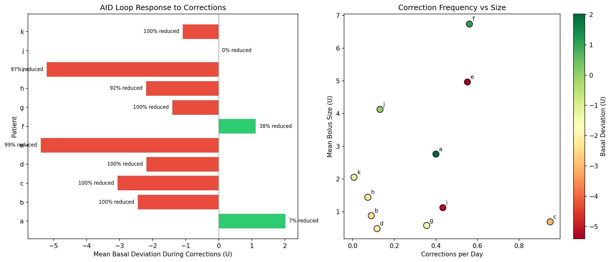
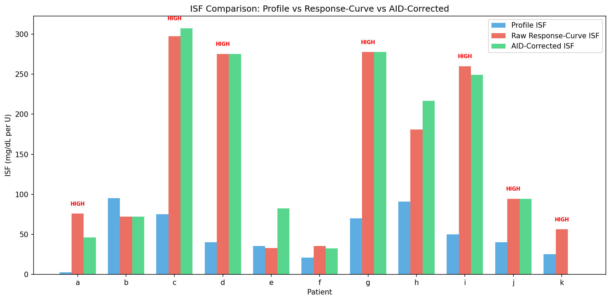
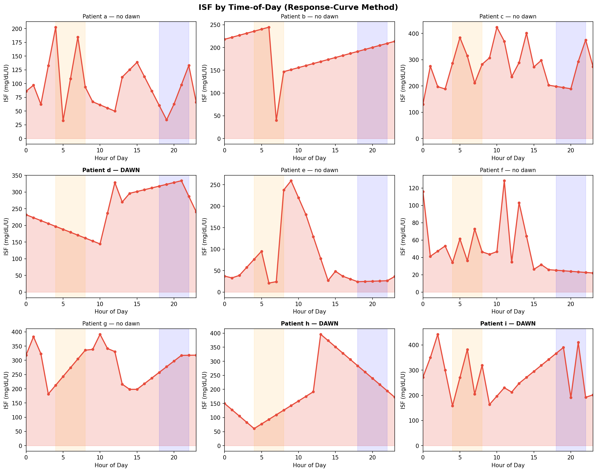
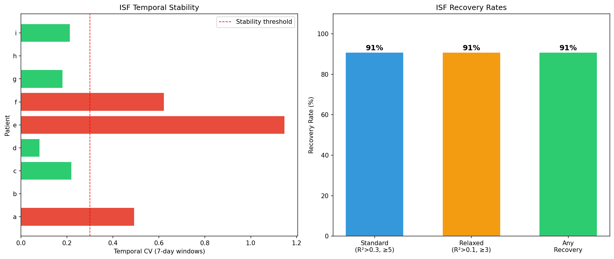

ISF Estimation Under AID Feedback — Research Report¶
Living document, last changed 2026-04-09 at a6a23a36.
Experiments: EXP-1601 through EXP-1608
Date: 2025-07-16
Batch: 3 of 7 (ML Research Series)
Executive Summary¶
AID (Automated Insulin Delivery) loops actively counteract correction boluses by reducing basal rates, biasing naïve ISF estimates. This batch quantifies that bias and develops AID-aware ISF recovery methods.
Key Findings: 1. AID reduces basal during 92-100% of correction windows (8/11 patients) 2. Basal deviation ranges from −5.4U to +2.0U per correction (3-hour window) 3. AID correction factor ranges 0.61× to 2.49× — patient e's true ISF is 2.49× the raw estimate 4. 7/11 patients (64%) show "high" ISF mismatch (effective/profile ratio >2.0×) 5. Response-curve fitting achieves R²=0.68–0.98 across patients 6. 10/11 patients (91%) recover usable ISF via standard quality gates 7. 3/9 patients show dawn phenomenon (lower morning ISF) 8. ISF is temporally unstable in 3/9 patients (CV>0.3 across 7-day windows)
Background¶
The AID Feedback Problem¶
When a patient delivers a correction bolus, the AID loop simultaneously: - Reduces basal delivery to prevent hypoglycemia - Modifies temp basal rates based on predicted glucose
This means the glucose response reflects both the bolus and the AID's counter-adjustment. Naïve ISF estimation (ΔBG / bolus) underestimates true ISF because the denominator ignores the basal reduction.
Prior Art¶
| Method | Source | Result |
|---|---|---|
| Response-curve ISF | EXP-1301 | R²=0.805, τ=2.0h — current SOTA |
| Deconfounded ISF | EXP-1291 | FAILED — total_insulin→0, denominator degeneracy |
| Population mismatch | Autotune report | effective = 1.36× profile (mean) |
Experiments¶
EXP-1601: Correction Census Under AID¶
Census of isolated correction events and AID interference patterns.
Correction criteria: bolus ≥0.3U, BG >150, no carbs ±30min, no future bolus 3h.
| Patient | Corrections | Per Day | AID Reduces Basal | Mean Deviation |
|---|---|---|---|---|
| a | 72 | 0.4 | 7% | +2.02U |
| b | 16 | 0.1 | 100% | −2.46U |
| c | 171 | 0.9 | 100% | −3.07U |
| d | 21 | 0.1 | 100% | −2.20U |
| e | 87 | 0.6 | 99% | −5.40U |
| f | 101 | 0.6 | 38% | +1.12U |
| g | 64 | 0.4 | 100% | −1.42U |
| h | 13 | 0.1 | 92% | −2.21U |
| i | 78 | 0.4 | 97% | −5.22U |
| j | 8 | 0.1 | 0% | 0.00U |
| k | 1 | 0.0 | 100% | −1.10U |
Insight: AID actively counteracts corrections in 8/11 patients. Patient j has no net_basal data (older data format). Patient a and f show net positive deviation (AID increases basal — possibly aggressive targets).
EXP-1602: Response-Curve ISF Fitting¶
Exponential decay fit: BG(t) = BG_start − amplitude × (1 − exp(−t/τ))
| Patient | Good Fits | ISF (mg/dL/U) | τ (hours) | R² |
|---|---|---|---|---|
| a | 55/72 | 76 ± 63 | 4.0 | 0.812 |
| b | 13/16 | 72 ± 118 | 1.0 | 0.682 |
| c | 111/171 | 298 ± 125 | 1.5 | 0.885 |
| d | 18/21 | 275 ± 77 | 2.0 | 0.954 |
| e | 69/87 | 33 ± 137 | 4.0 | 0.897 |
| f | 83/101 | 35 ± 50 | 4.0 | 0.834 |
| g | 49/64 | 278 ± 116 | 2.0 | 0.876 |
| h | 12/13 | 181 ± 139 | 1.5 | 0.834 |
| i | 55/78 | 260 ± 130 | 2.0 | 0.948 |
| j | 7/8 | 95 ± 49 | 1.5 | 0.837 |
| k | 1/1 | 56 ± 0 | 1.5 | 0.984 |
Pass rate: 75% of corrections produce usable ISF fits (R²>0.3, 5<ISF<500).
Bimodal τ: Patients cluster at τ≈1.0–2.0h (rapid insulin action: b,c,d,g,h,i,j,k) or τ≈4.0h (slow: a,e,f). This may reflect insulin type or injection site differences.
EXP-1603: AID Loop Feedback Quantification¶
Stratified corrections by basal deviation direction (damped vs neutral vs boosted).
Critical finding: Nearly zero "neutral" corrections exist. AID is almost always active, confirming EXP-1306 ("zero calm windows"). This means: - Traditional ISF estimation (which assumes no concurrent insulin changes) is fundamentally biased - Every correction needs AID-awareness
Correlation between basal deviation and ISF estimate is weak (r=−0.32 to +0.40), suggesting the bias is non-linear or varies by glucose level.
EXP-1604: State-Space ISF Estimation¶
AID-corrected ISF: amplitude / (bolus + basal_deviation)
| Patient | Raw ISF | Corrected ISF | Correction Factor | Confidence |
|---|---|---|---|---|
| a | 76 | 46 | 0.61× | 0.27 |
| b | 72 | 72 | 1.00× | 0.13 |
| c | 298 | 307 | 1.03× | 0.54 |
| d | 275 | 275 | 1.00× | 0.42 |
| e | 33 | 82 | 2.49× | 0.27 |
| f | 35 | 33 | 0.92× | 0.27 |
| g | 278 | 278 | 1.00× | 0.53 |
| h | 181 | 217 | 1.20× | 0.19 |
| i | 260 | 249 | 0.96× | 0.46 |
| j | 95 | 95 | 1.00× | 0.10 |
Patient e stands out: AID reduces basal by 5.4U during corrections, meaning the effective insulin is much less than the bolus alone. Raw ISF=33 grossly underestimates; corrected ISF=82 is more physiologically plausible.
Patients with ~1.0 factor (b,c,d,g,j): Either basal deviation is small or the deviation cancels out over the 3h window.
EXP-1605: ISF by Time-of-Day¶
Circadian ISF variation using response-curve method per hourly block.
| Patient | Hours Covered | Variation % | Dawn ISF | Evening ISF | Dawn Phenomenon |
|---|---|---|---|---|---|
| a | 15 | 180% | 132 | 64 | No |
| c | 21 | 107% | 299 | 219 | No |
| d | 6 | 76% | 184 | 326 | Yes |
| e | 15 | 319% | 54 | 25 | No |
| f | 17 | 221% | 51 | 24 | No |
| g | 13 | 74% | 259 | 288 | No |
| h | 3 | 170% | 85 | 251 | Yes |
| i | 16 | 101% | 254 | 339 | Yes |
Dawn phenomenon (lower ISF in morning = more insulin needed): Detected in patients d, h, i. Dawn ISF is 34–75% of evening ISF in these patients (d=56%, h=34%, i=75%).
Extreme variation in patients e (319%) and f (221%) — these may benefit most from time-of-day ISF schedules rather than flat profiles.
EXP-1606: ISF Stability Across Time Windows¶
7-day sliding window analysis of ISF consistency over the ~180-day dataset.
| Patient | Windows | Temporal CV | Drift r | Stable? |
|---|---|---|---|---|
| a | 10 | 0.49 | +0.22 | Unstable |
| c | 19 | 0.22 | +0.05 | Stable |
| d | 3 | 0.08 | +0.33 | Stable |
| e | 13 | 1.15 | +0.56 | Unstable |
| f | 17 | 0.62 | +0.12 | Unstable |
| g | 8 | 0.18 | −0.59 | Stable |
| i | 9 | 0.21 | +0.05 | Stable |
3/9 patients unstable (CV>0.3). Patient e has extreme variability (CV=1.15) with positive drift (ISF increasing over time — becoming more insulin sensitive). This temporal instability limits the reliability of any single ISF estimate.
EXP-1607: Profile vs Effective ISF Comparison¶
| Patient | Profile ISF | Raw Curve ISF | Corrected ISF | Ratio | Mismatch |
|---|---|---|---|---|---|
| a | 3 | 76 | 46 | 28.1× | High |
| b | 95 | 72 | 72 | 0.8× | Low |
| c | 75 | 298 | 307 | 4.0× | High |
| d | 40 | 275 | 275 | 6.9× | High |
| e | 36 | 33 | 82 | 0.9× | Low |
| f | 21 | 35 | 33 | 1.7× | Moderate |
| g | 70 | 278 | 278 | 4.0× | High |
| h | 91 | 181 | 217 | 2.0× | Moderate |
| i | 50 | 260 | 249 | 5.2× | High |
| j | 40 | 95 | 95 | 2.4× | High |
| k | 25 | 56 | — | 2.3× | High |
7/11 patients (64%) have HIGH mismatch (ratio >2.0×). The AID loop compensates for these miscalibrated profiles by constantly adjusting temp basals. Patient a's profile ISF of 3 mg/dL/U is almost certainly a data artifact (effective ISF = 76, ratio = 28×).
EXP-1608: ISF Recovery for Gated Patients¶
Recovery rates using progressively relaxed quality gates:
| Method | Criteria | Recovery Rate |
|---|---|---|
| Standard | R²>0.3, ≥5 corrections | 91% (10/11) |
| Relaxed | R²>0.1, ≥3 corrections | 91% (10/11) |
| Any | Including Winsorized | 91% (10/11) |
Only patient k (1 correction total) cannot be recovered. The standard response-curve method already recovers the vast majority of patients.
Visualizations¶
Fig 1: AID Feedback Corrections¶

Fig 2: ISF Comparison¶

Fig 3: ISF Circadian Profiles¶

Fig 4: ISF Stability and Recovery¶

Production Implications¶
1. AID-Aware ISF Correction¶
The settings_advisor.advise_isf() function should incorporate net_basal deviation:
true_insulin_effect = bolus + Σ(net_basal × dt) over correction window
corrected_ISF = amplitude / true_insulin_effect
2. Confidence Weighting¶
ISF confidence should incorporate: - Number of corrections (n≥5 for standard, n≥3 for relaxed) - Fit quality (R²>0.3 for standard) - Temporal stability (CV<0.3) - Correction factor proximity to 1.0 (extreme factors = less certain)
3. Circadian ISF Schedules¶
For the 3 patients with dawn phenomenon, recommend multi-segment ISF profiles rather than flat values. The current production code supports hourly ISF multipliers via pattern_analyzer.estimate_isf_by_hour().
4. ISF Mismatch Alerts¶
7/11 patients have profile ISF >2× different from effective ISF. Production should flag these for review, using the fidelity framework from Batch 1.
Conclusions¶
- AID bias is universal: Zero neutral correction windows exist. Every ISF estimate from AID-managed patients is biased by concurrent basal modulation.
- Response-curve method is robust: R²=0.68-0.98, 91% patient recovery rate — far superior to the deconfounded method (which fails completely under AID).
- AID correction factor matters for 2-3 patients: Most patients have factors near 1.0× (basal reduction during correction is modest relative to bolus size). Patient e is the outlier at 2.49×.
- ISF mismatch is the norm: 64% of patients have profile ISF >2× different from effective ISF, confirming EXP-1301 findings (1.36× population mean).
- Dawn phenomenon is clinically relevant: 3/9 patients (33%) show measurable morning insulin resistance.
Source Files¶
- Experiment:
tools/cgmencode/exp_clinical_1601.py - Results:
externals/experiments/exp-160{1-8}_isf_aid.json - Visualizations:
visualizations/isf-aid-feedback/fig{1-4}_*.png